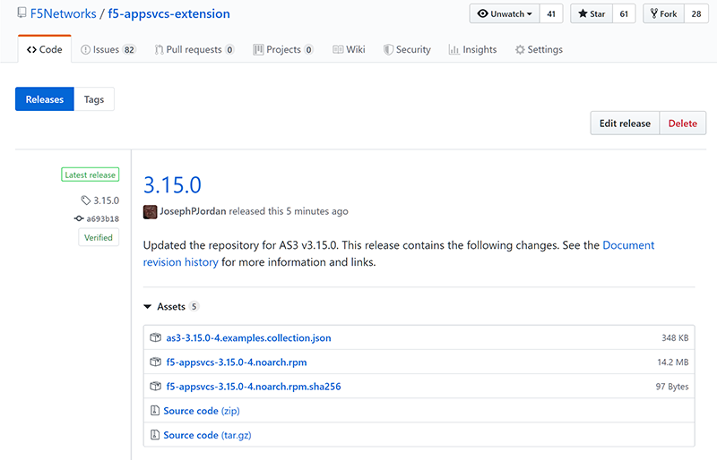

Troubleshooting
Use this section to read about known issues and for common troubleshooting steps.
BIG-IP AS3 general troubleshooting tips
- Examine the restnoded failure log at /var/log/restnoded/restnoded.log (this is where BIG-IP AS3 records error messages)
- Examine the REST response:
- A 400-level response will carry an error message with it
- If this message is missing, incorrect, or misleading, please let us know by filing an issue on Github.
- Use BIG-IP AS3’s trace option to create a detailed trace of the configuration process for subsequent analysis. BIG-IP AS3’s trace option can be a powerful tool to learn about its working details and to review BIG-IP AS3’s operations in detail
Troubleshooting
I’m having trouble creating an application service without persistence
In order to create (or update) a declaration for an application service that does include persistence, you use the persistenceMethod property with a value of [] (empty square brackets), on your application service. This sets the persistence method on the application service (BIG-IP virtual server) to none.
The line should look like: "persistenceMethods": []".
For example, a declaration snippet would look like the following:
"service": {
"class": "Service_HTTP",
"virtualAddresses": [
"10.0.1.10"],
"persistenceMethods": [],
"pool": "web_pool"
},
I’m receiving an error with status of 500 when sending a large declaration
When sending a large declaration with hundreds of application services, you may experience a 500 error stating that the save sys config operation failed. In some cases, the operation succeeds, but you still receive the error.
If you experience this issue, restart restjavad (from the BIG-IP command line: `bigstart restart restjavad`), and then resend the declaration.
After upgrading to BIG-IP AS3 3.10.0, I’m experiencing issues with my Service Discovery pool configuration
In BIG-IP AS3 3.10.0, the name of the Service Discovery package changed. In prior versions, the package was named f5-appsvcs-discovery, and in 3.10.0 this changed to f5-service-discovery. If you were running BIG-IP AS3 3.8.0 or later, and upgraded to 3.10.0, the new package is installed, but the old package is not deleted. This means both Service Discovery applications are running, which may cause unpredictable pool configuration when you post a declaration after the upgrade. The procedure if slightly different depending on whether you have already upgraded to 3.10.0 or not.
If you are using BIG-IP AS3 3.8.0 or later, and have not yet upgraded to 3.10.0, before upgrading to 3.10.0, use the following guidance:
- Uninstall the previous version of BIG-IP AS3, and the Service Discovery package:
- From the BIG-IP UI, click iApps > Package Management LX.
- Check the boxes for f5-appsvcs and f5-appsvcs-discovery. You must uninstall both packages at the same time.
- Click the Uninstall button, and then click Yes when prompted to uninstall the packages.
- Install BIG-IP AS3 3.10.0 (see Downloading and installing the BIG-IP AS3 package).
Important Uninstalling BIG-IP AS3 and the Service Discovery packages will not delete your current configuration, alter the BIG-IP configuration, or disrupt traffic.
If you have already installed BIG-IP AS3 3.10.0, use the following guidance to resolve this issue:
- Uninstall BIG-IP AS3 3.10.0, and both Service Discovery packages:
- From the BIG-IP UI, click iApps > Package Management LX.
- Check the boxes for f5-appsvcs, f5-appsvcs-discovery, and f5-service-discovery. You must uninstall all packages at the same time.
- Click the Uninstall button, and then click Yes when prompted to uninstall the packages.
- Reinstall BIG-IP AS3 3.10.0 (see Downloading and installing the BIG-IP AS3 package). After you reinstall 3.10.0, you may have to refresh the UI to see the new Service Discovery package.
Important Uninstalling BIG-IP AS3 and the Service Discovery packages will not delete your current configuration, alter the BIG-IP configuration, or disrupt traffic.
I am receiving a path not registered error when I try to post a declaration
If you are receiving this error, it means either you did not install BIG-IP AS3, or it did not install properly. The error contains the following message:
{
"code":404,
"message": "Public URI path no registered. Please see /var/log/restjavad.0.log and /var/log/restnoded/restnoded.log for details.".
...
}
If you receive this error, see Downloading and installing the BIG-IP AS3 package to install or re-install BIG-IP AS3.
I’m receiving the following error when using BIG-IP AS3 on BIG-IQ: “Failed to set tenant on BIG-IQ: java.lang.IllegalArgumentException: Cannot modify target address”
The entire message looks similar to:
{
"message": "Failed to set tenant on BIG-IQ: java.lang.IllegalArgumentException: Cannot modify target address",
"tenant": "Generic_Ten",
"host": "localhost",
"runTime": 531,
"code": 422
}
This error message occurs when you attempt to create/modify a Tenant or something on a Tenant that exists on another BIG-IP. Note: Tenants must be unique among all BIG-IPs managed by BIG-IQ. Referencing the proper BIG-IP should solve this error.
I’m receiving the following error when using BIG-IP AS3 on BIG-IQ: “Cannot find any ADC root nodes for the target devices”
The entire message looks similar to:
{
"message":"Cannot find any ADC root nodes for the target devices",
"tenant":"TEST_Monitor",
"host":"localhost",
"runTime":11558,
"code":422
}
This error means that the BIG-IQ has not discovered/imported LTM on that specific BIG-IP. To correct this issue, perform the following from the BIG-IQ UI:
- Click Devices > BIG-IP Devices. Note the Services column will likely show only Management.
- Click the Management link for the target BIG-IP.
- In the LTM section at the top of the page, click Discover.
- When the discovery process completes, click Import.
- Send the BIG-IP AS3 declaration again. You should no longer receive the error.
I just synchronized the BIG-IP configuration across devices in a Device Group, but it didn’t install BIG-IP AS3 on all the devices in the group
When you are using BIG-IP AS3 on a BIG-IP system that is part of a Device Group for high availability, if you want BIG-IP AS3 on all devices, you must manually install it on each BIG-IP in the group. Synchronizing the configuration between devices in a Device Group does NOT install BIG-IP AS3 on devices that do not have BIG-IP AS3 installed.
I can no longer find the BIG-IP AS3 source RPM on GitHub
Beginning with BIG-IP AS3 3.15.0, the BIG-IP AS3 RPM, Postman collection, and checksum files are no longer located in the /dist directory in the BIG-IP AS3 repository on GitHub. These files can be found on the GitHub Release, as Assets.
For example:

You can find historical files on GitHub by using the Branch drop-down, clicking the Tags tab, and then selecting the appropriate release.
I cannot tell the difference between policyIAM and profileAccess objects in BIG-IP AS3
policyIAM and profileAccess both refer to the same BIG-IP APM object: an APM Access profile. While you can use either object as a part of your Service_HTTP or Service_HTTPS class, we recommend using policyIAM in your declarations to refer to an APM Access profile, as it more accurately adheres to industry-standard terminology.
For information on the APM Access profile, see APM documentation.
Why do some object names now have a trailing hyphen in BIG-IP AS3 3.16.0?
BIG-IP AS3 3.16.0 and later introduce changes in how BIG-IP AS3 generates names for certain objects. Additionally, dots (.) and hyphens (-) are now allowed in Application property names (BIG-IP AS3 3.17.0 allows dots and hyphens in Tenant and Application names).
For complete details, see Updates to object naming in BIG-IP AS3 version 3.16.0 and later
Why are the latest example declarations failing on BIG-IP AS3 3.19 and earlier?
In BIG-IP AS3 3.20, nearly all of the example declarations have been updated to remove any template that was specified, and rename any virtual services that used the name serviceMain to service. In BIG-IP AS3 3.20, the generic template is the default, which allows services to use any name.
Important
If you attempt to use one of these examples on a version prior to 3.20, they will fail.
To solve this issue, you have three options:
- Update to BIG-IP AS3 v3.20 or later
- Manually add a template to the Application class in example declaration
- Use the example declarations found in the 3.19 LTS documentation (https://clouddocs.f5.com/products/extensions/f5-appsvcs-extension/3.19/declarations/)
See this FAQ entry for more information.
Why is my BIG-IP experiencing occasional high CPU usage and slower performance?
If your BIG-IP system seems to be using a high amount of CPU and degraded performance, you may be experiencing a known issue with the restjavad daemon. This is an issue with the underlying BIG-IP framework, and not an issue with BIG-IP AS3.
More information
Restjavad may become unstable if the amount of memory required by the daemon exceeds the value allocated for its use. The memory required by the restjavad daemon may grow significantly in system configurations with either a high volume of device statistics collection (AVR provisioning), or with a large number of LTM objects managed by the REST framework (SSL Orchestrator provisioning). The overall system performance is degraded during the continuous restart of the restjavad daemon due to high CPU usage.
See Bug ID 894593.
Workaround
Increase the memory allocated for the restjavad daemon. See the Best Practice page for instructions and guidance.
Why did some of my iControl LX (iApp LX) Extensions disappear after upgrading my BIG-IP?
After upgrading a BIG-IP, if you notice that your iControl LX Extensions are no longer available, you may be experiencing a known issue with these extensions (which includes iApp LX Extensions like BIG-IP AS3), where they are no longer present after upgrading a BIG-IP device. This is an issue with the underlying BIG-IP framework, and not an issue with BIG-IP AS3.
See Bug ID 929213 for updates and more information.
Workaround
As a workaround, uninstall the package and then reinstall it.
- From the BIG-IP, click iApps > Package Management LX
- Select the appropriate package, and then click Uninstall
- Click Import and provide the path of package to reinstall it.
I’m not using Service Discovery, can I disable it?
If you are not using Service Discovery, and are using BIG-IP AS3 3.27 or later, you can disable it by sending a request to the /settings endpoint.
For instructions, see Disabling Service Discovery.
Why is my iRule failing in an AS3 declaration when I know it is valid?
If you have an iRule in an AS3 declaration which is returning 422 errors, there are two things to look for.
- If the error message is HTML Tag-like Content in the Request URL/Body look for special characters in iRule comments and remove or replace them.
- If the error message contains [braces are required around the expression] where the expression appears to be the entire iRule, this may be because of a valid UTF-8 or Unicode character in the iRule that iControl REST does not parse correctly. Try finding and removing or replacing any such characters. This is documented in K44543159.
Why are application templates on BIG-IQ not working properly?
AS3 versions 3.42 and later are NOT compatible with BIG-IQ, and cause issues with application templates on the BIG-IQ.
To see the version of AS3 your BIG-IQ device is running, from the BIG-IQ command line, type: curl http://localhost:8105/shared/appsvcs/info.
If you are experiencing this issue, we recommend following the steps in Downgrading the version of AS3 on BIG-IQ.
Why am I seeing Changes Pending returned when I send a declaration to a BIG-IP device group with an action of dry-run?
When sending a BIG-IP AS3 declaration to a device that is a part of a device group, when the action value is dry-run, a Changes Pending message is returned, even though no changes should have been made because of the dry-run action.